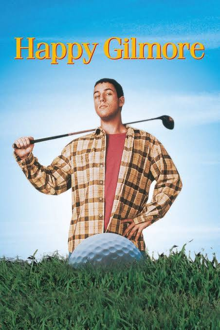
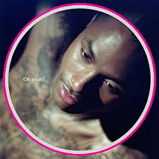
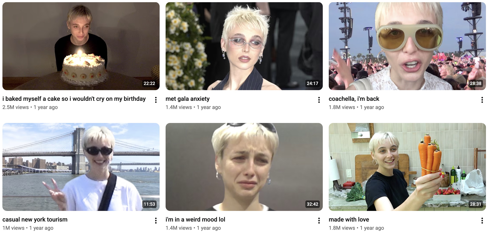

Dennis Dugan is an American film director who directed several films featuring Adam Sandler, including Happy Gilmore, Big Daddy, Jack & Jill, and Grown Ups. I mainly chose him because I LOVE how silly Adam Sandler movies are. More specifically, his movies create a lighthearted and comforting mood, making them easy to rewatch. The style, tone of humor, and consistent casting make his movies recognizable. His work shows me that creativity does not always have to be serious or considered traditional art. I admire his ability to understand his audience and remain committed to his style while still telling different stories.
Image Source: SOURCE NAME

Steve Lacy is an American singer-songwriter, guitarist, and record producer. I can’t stop listening to his new album, Oh Yeah? His technique feels unique and experimental because he layers sounds in nontraditional ways while still making his music catchy. He also uses storytelling in his lyrics, openly sharing personal emotions and experiences. His work shows me that experimentation and vulnerability can make art feel more original and emotionally meaningful. He inspires me to take creative risks instead of always following familiar techniques.
Image Source: SOURCE NAME

Emma Chamberlain is an American influencer, podcaster, businesswoman, and model. I started watching her in 2016, when she was building a brand around relatability, awkwardness, and a willingness to show imperfection. She speaks to her audience conversationally and honestly, making viewers feel personally connected to her rather than like they are watching a distant celebrity. In a world of perfectly curated celebrities and scripted videos, her authenticity felt like a breath of fresh air. Since then, she has evolved from a casual YouTube creator into a major presence in fashion, photography, podcasting, branding, and entrepreneurship without losing the personality that originally connected her to her audience. She inspires me to create work that feels human and personal rather than obsessing over making everything perfect.
Image Source: SOURCE NAME
Learn more about Emma Chaimblerlain's Podcast
I organized the images and descriptions using our hierarchy principles last week. The artist's name, then the largest is the image, then the description, and finally the hyperlinks. I also used a breaks and a horizontal lines between artists to organize the information.
At first, a few of my links failed. I noticed that when linking your sources, it is helpful to open your image in a new tab, then copy the address. That way, your link brings you to the image, not the site.
I am very satisfied with the way my page turned out. I think the hierarchy is good; it is organized well the image is clear and the links work. That’s all I could ask for as I continue to learn. I cant wait till I learn more adn we actually get to start decorating the sites.